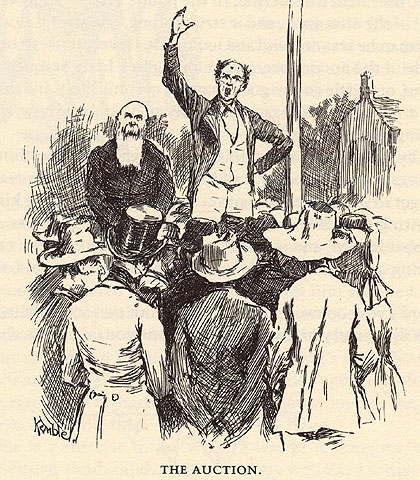

|
 My reason for including this illustration requires a bit of explanation. As part of their scam at the Wilkses', the King and the Duke sell off Peter Wilks' property. Included in the estate are 3 slaves: a mother and two sons. In Chapter 27 we learn that the King has sold them to "a couple of nigger traders . . . the two sons up the river to Memphis, and their mother down the river to Orleans." It is a scene that recalls Rachel's narrative in MT's "True Story," though it substitutes sentiment for Rachel's violent resistance: "I thought them poor [white Wilks'] girls and them niggers would break their hearts for grief; they cried around each other, and took on so it most made me sick to see it." In Uncle Tom's Cabin, Stowe would have bitterly called this scene "a select incident of a lawful trade," one of the typical effects of slavery. Huck simply describes it, but with considerable emotional and moral force. He never, however, gives these slaves names. For his part, Kemble chose not to illustrate it, and instead, a chapter later, drew the scene above, the auction at which all the non-human assets of the late Peter Wilks are sold. As an auction scene that replaces the scene of selling that black family apart, this strikes me as relevant to the question of how Huck Finn depicted slavery for its original readers. The novel's illustrations never show us any of the slaves at either the Grangerfords' or the Wilks'. The Barrett Collection, UVA PS1305 .A1 1885b |